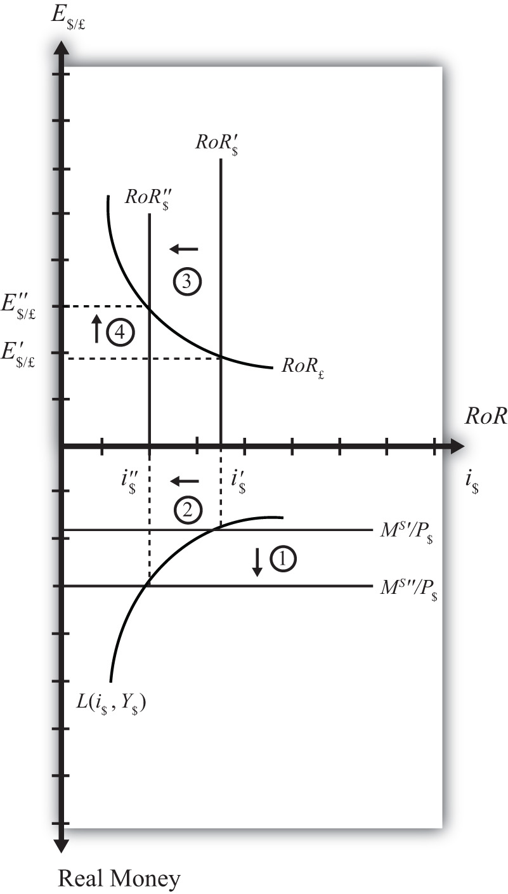
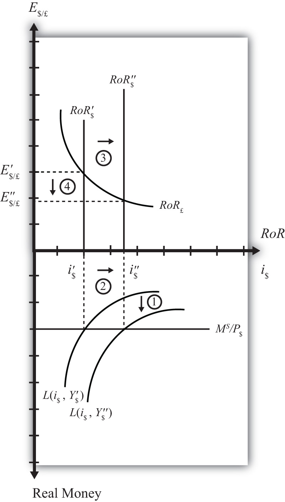

Comparative statics is any exercise examining how the endogenous variables will be affected when one of the exogenous variables is presumed to change, while holding all other exogenous variables constant. Holding other variables constant at their original values is the “ceteris paribus” assumption. We will do several such exercises here using the combined money-Forex market diagram.
Suppose the U.S. money supply increases, ceteris paribus. The increase in MS causes an increase in the real money supply (MS/P$), which causes the real money supply line to shift “down” from MS′/P$ to MS″/P$ (step 1) in the adjacent Money-Forex diagram, Figure 18.9 "Effects of an Increase in the Money Supply". (Be careful here: down in the diagram means an increase in the real money supply.) This causes a decrease in the equilibrium interest rate from i$′ to i$″ (step 2). The decrease in the U.S. interest rate causes a decrease in the rate of return on dollar assets: RoR$ shifts from RoR$′ to RoR$″ (step 3). Finally, the reduction in the dollar rate of return causes an increase in the exchange rate from E′$/£ to E″$/£ (step 4). This exchange rate change corresponds to an appreciation of the British pound and a depreciation of the U.S. dollar. In summary, an increase in the U.S. money supply, ceteris paribus, causes a decrease in U.S. interest rates and a depreciation of the dollar.
Figure 18.9 Effects of an Increase in the Money Supply
Suppose there is an increase in U.S. GDP, ceteris paribus. This will increase real money demand, causing a “downward” shift in the real money demand curve from L(i$, Y$′) to L(i$, Y$″) (step 1) in the Money-Forex diagram, Figure 18.10 "Effects of an Increase in GDP". (Remember, real money increases as you move down on the rotated money diagram.) This causes an increase in the U.S. interest rate from i$′ to i$″ (step 2). The increase in the interest means that the rate of return on dollar assets increases from RoR$′ to RoR$″ (step 3). Finally, the increase in the U.S. RoR causes a decrease in the exchange rate from E′$/£ to E″$/£ (step 4). The exchange rate change corresponds to an appreciation of the U.S. dollar and a depreciation of the British pound. In summary, an increase in real U.S. GDP, ceteris paribus, causes an increase in U.S. interest rates and appreciation (depreciation) of the U.S. dollar (British pound).
Figure 18.10 Effects of an Increase in GDP
Using the Forex market and money market models, indicate the effect of each change listed in the first row of the table, sequentially, on the variables listed in the first column. For example, “Expansionary U.S. Monetary Policy” will first cause an increase in the “Real U.S. Money Supply.” Therefore, a “+” is placed in the first box of the table. In the next row, answer how “U.S. Interest Rates” will be affected. You do not need to show your work. Note E$/* represents the dollar/foreign exchange rate. Use the following notation:
+ the variable increases
− the variable decreases
0 the variable does not change
A the variable change is ambiguous (i.e., it may rise, it may fall)
| Expansionary U.S. Monetary Policy | An Increase in U.S. Price Level | An Increase in U.S. Real GDP | |
|---|---|---|---|
| Real U.S. Money Supply | + | ||
| U.S. Interest Rates | |||
| RoR on U.S. Assets | |||
| Foreign Interest Rates | |||
| RoR on Foreign Assets | |||
| U.S. Dollar Value | |||
| E$/* |